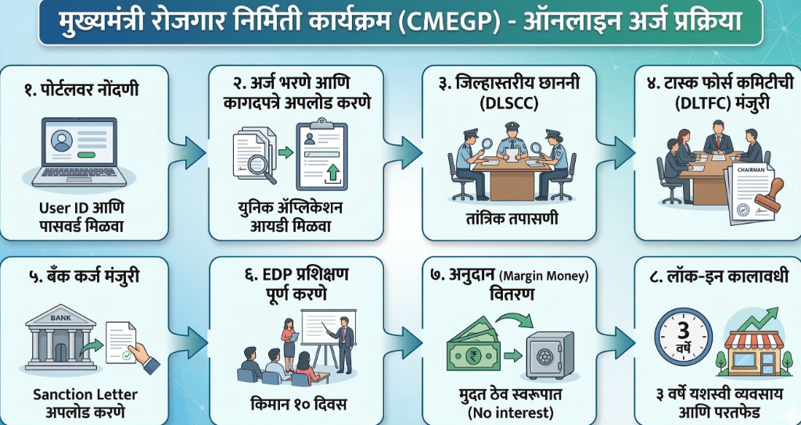

मुख्यमंत्री रोजगार निर्मिती कार्यक्रम (CMEGP)
महाराष्ट्र शासनाने राज्यातील ग्रामीण आणि शहरी भागात सूक्ष्म आणि लघु उद्योग स्थापन करून रोजगाराच्या संधी निर्माण करण्यासाठी 'मुख्यमंत्री रोजगार निर्मिती कार्यक्रम' (CMEGP) ही नवीन पत-संलग्न अनुदान योजना सुरू केली आहे.
१. योजनेचे उद्दिष्ट
- येत्या पाच वर्षांत १,००,००० सूक्ष्म आणि लघु उद्योग स्थापन करणे आणि राज्यातील ८-१० लाख तरुणांना रोजगाराच्या संधी उपलब्ध करून देणे.
- ग्रामीण तरुणांचे शहरांकडे होणारे स्थलांतर थांबवणे आणि पारंपारिक कारागीर व सुशिक्षित बेरोजगारांना स्वयंरोजगाराच्या संधी उपलब्ध करून देणे.
२. पात्रता निकष
- वय: १८ ते ४५ वर्षे (विशेष प्रवर्गातील उमेदवारांसाठी वयोमर्यादेत ५ वर्षांची सूट).
- रहिवासी: अर्जदार महाराष्ट्राचा रहिवासी असणे आवश्यक आहे.
- शैक्षणिक पात्रता:
- १० लाख ते २५ लाख रुपयांच्या प्रकल्पांसाठी: किमान ७ वी उत्तीर्ण.
- २५ लाख रुपयांपेक्षा जास्त प्रकल्पांसाठी: किमान १० वी उत्तीर्ण.
- कुटुंब मर्यादा: कुटुंबातील केवळ एकच व्यक्ती या योजनेचा लाभ घेऊ शकते (कुटुंब म्हणजे स्वतः आणि पती/पत्नी).
- नवीन प्रकल्प: ही योजना केवळ नवीन उद्योगांसाठी लागू आहे.
३. आर्थिक सहाय्य आणि अनुदान
| लाभार्थी प्रवर्ग | स्वतःचे योगदान (प्रकल्प खर्चाच्या) | अनुदानाचे दर (शहरी भाग) | अनुदानाचे दर (ग्रामीण भाग) |
| :--- | :--- | :--- | :--- |
| सामान्य प्रवर्ग | १०% | १५% | २५% |
| विशेष प्रवर्ग (SC/ST/महिला/माजी सैनिक/दिव्यांग) | ५% | २५% | ३५% |
- कमाल प्रकल्प मर्यादा: उत्पादन क्षेत्रासाठी ५० लाख रुपये आणि सेवा किंवा कृषी आधारित क्षेत्रासाठी १० लाख रुपये.
४. अंमलबजावणी यंत्रणा
- नोडल एजन्सी: उद्योग संचालनालय (DOI), महाराष्ट्र शासन.
- अंमलबजावणी संस्था:
- शहरी भाग: जिल्हा उद्योग केंद्र (DIC).
- ग्रामीण भाग: महाराष्ट्र राज्य खादी व ग्रामोद्योग मंडळ (KVIB).
- २५ लाख रुपयांपेक्षा जास्त खर्चाच्या प्रकल्पांसाठी शहरी आणि ग्रामीण दोन्ही भागात जिल्हा उद्योग केंद्र (DIC) हीच अंमलबजावणी संस्था असेल.
५. अर्ज प्रक्रिया (थोडक्यात)
- अर्जदाराने केवळ maha-cmegp.gov.in या पोर्टलवर ऑनलाइन अर्ज करणे अनिवार्य आहे.
- कोणत्याही परिस्थितीत प्रत्यक्ष (Physical) अर्ज स्वीकारले जाणार नाहीत.
- बँकेकडून कर्ज मंजूर झाल्यानंतर, लाभार्थ्याला किमान १० दिवसांचे उद्योजकता विकास प्रशिक्षण (EDP) पूर्ण करणे आवश्यक आहे.
६. महत्त्वाच्या अटी
- जमिनीची किंमत प्रकल्प खर्चात समाविष्ट केली जाणार नाही.
- भाड्याने घेतलेल्या कामाच्या जागेचा/गाळ्याचा खर्च ३ वर्षांच्या प्रो-रेटा आधारावर प्रकल्प खर्चात समाविष्ट केला जाऊ शकतो.
- बँकेकडून मिळालेले अनुदान (Margin Money) ३ वर्षांसाठी मुदत ठेव (TDR) म्हणून ठेवले जाईल आणि त्यावर कोणतेही व्याज आकारले जाणार नाही.
CMEGP साठी आवश्यक कागदपत्रे (Documents Required)
- आधार कार्ड: वैयक्तिक अर्जदाराकडे (प्रोप्रायटरशिप) वैध आधार क्रमांक असणे आवश्यक आहे. भागीदारी संस्था किंवा नोंदणीकृत बचत गटांच्या बाबतीत, अधिकृत व्यक्तीने त्यांचा आधार क्रमांक सादर करणे आवश्यक आहे.
- रहिवासी पुरावा: अर्जदार महाराष्ट्राचा रहिवासी असणे आवश्यक आहे किंवा त्याच्याकडे अधिवास प्रमाणपत्र (Domicile Certificate) असणे अनिवार्य आहे.
- शैक्षणिक प्रमाणपत्र: १० ते २५ लाख रुपयांच्या प्रकल्पांसाठी किमान ७ वी उत्तीर्ण आणि २५ लाख रुपयांवरील प्रकल्पांसाठी किमान १० वी उत्तीर्ण प्रमाणपत्र आवश्यक आहे.
- जातीचे प्रमाणपत्र: विशेष प्रवर्गाचा (SC/ST) लाभ घेण्यासाठी सक्षम प्राधिकाऱ्याने दिलेले जातीचे प्रमाणपत्र किंवा वैधता प्रमाणपत्र आवश्यक आहे.
- अपंगत्व प्रमाणपत्र: दिव्यांग अर्जदारांकडे 'अपंग व्यक्ती अधिकार अधिनियम, २०१६' अंतर्गत वैध अपंगत्व प्रमाणपत्र असणे आवश्यक आहे.
- संस्था नोंदणी कागदपत्रे: भागीदारी संस्था किंवा बचत गटांसाठी (SHG) नोंदणीची प्रमाणित प्रत सादर करणे आवश्यक आहे.
- प्रशिक्षण प्रमाणपत्र: अर्जदाराने किमान १० ते १४ दिवसांचे उद्योजकता विकास प्रशिक्षण (EDP) पूर्ण केलेले असावे. जर असे प्रशिक्षण आधीच पूर्ण झाले असेल, तर त्याचे प्रमाणपत्र अर्जासोबत जोडावे लागते.
इतर महत्त्वाचे तपशील (Additional Details)
- आरक्षण (Reservation): एकूण वार्षिक उद्दिष्टामध्ये अनुसूचित जाती (SC) आणि अनुसूचित जमाती (ST) साठी २०%, महिलांसाठी ३०% आणि दिव्यांगांसाठी ३% आरक्षण निश्चित करण्यात आले आहे.
- प्रकल्प खर्च मर्यादा (Project Cost): उत्पादन क्षेत्रातील प्रकल्पांसाठी कमाल मर्यादा ५० लाख रुपये आहे. सेवा क्षेत्र, कृषी आधारित उद्योग आणि ई-वाहनांवर आधारित माल वाहतूक यांसाठी ही मर्यादा १० लाख रुपये आहे.
- परतफेड कालावधी (Repayment): कर्जाची परतफेड ३ ते ७ वर्षांच्या कालावधीत करावी लागते, ज्यामध्ये बँकेने ठरवल्यानुसार सुरुवातीचा काही काळ सवलत (Moratorium) दिली जाऊ शकते.
- व्याज दर (Interest Rate): या कर्जावर बँकेचे प्रचलित व्याजदर लागू राहतील.
- क्रेडिट गॅरंटी (Credit Guarantee): या योजनेअंतर्गत मंजूर झालेले प्रकल्प भारत सरकारच्या CGTMSE (Credit Guarantee Fund Trust for Micro & Small Enterprises) द्वारे संरक्षित केले जातात.
- अनुदान अट (Lock-in Period): अनुदानाची रक्कम (Margin Money) ३ वर्षांसाठी मुदत ठेव म्हणून ठेवली जाईल. यशस्वीरित्या ३ वर्षे व्यवसाय चालवल्यानंतर आणि वेळेवर कर्जाची परतफेड केल्यानंतर ही रक्कम कर्ज खात्यात जमा केली जाईल.
CMEGP ऑनलाइन अर्ज करण्याची प्रक्रिया (Step-by-Step Process)

१. पोर्टलवर नोंदणी (Registration):
* अर्जदाराने सर्वप्रथम https://maha-cmegp.gov.in या अधिकृत पोर्टलवर जाऊन नोंदणी करणे आवश्यक आहे.
* नोंदणीच्या सुरुवातीला अर्जदाराला स्वतःचा युजर आयडी (User ID) आणि पासवर्ड (Password) मिळेल, ज्याद्वारे अर्जाची स्थिती ट्रॅक करता येईल.
२. अर्ज भरणे आणि कागदपत्रे अपलोड करणे:
* अर्जदाराने ऑनलाइन अर्जामध्ये सर्व माहिती अचूक भरावी. अर्ज भरताना माहिती सेव्ह (Save) करण्याची सुविधा पोर्टलवर उपलब्ध आहे.
* अर्ज पूर्ण भरून आणि आवश्यक कागदपत्रे अपलोड करून अंतिम सबमिशन केल्यानंतर, अर्जदाराला एक 'युनिक ॲप्लिकेशन आयडी' (Unique Application ID) मिळेल.
३. जिल्हास्तरीय छाननी (DLSCC Scrutiny):
* जिल्हा स्तरावर जिल्हास्तरीय छाननी आणि समन्वय उपसमिती (DLSCC) अर्जांची तांत्रिक तपासणी करेल.
* ही समिती अर्जांची तपासणी करून पात्र अर्जदारांची प्राथमिक यादी तयार करते आणि आवश्यकता असल्यास अर्जदाराला समुपदेशनासाठी (Counseling) बोलावू शकते.
४. टास्क फोर्स कमिटीची (DLTFC) मंजुरी:
* जिल्हाधिकाऱ्यांच्या अध्यक्षतेखालील जिल्हास्तरीय टास्क फोर्स कमिटी (DLTFC) पात्र प्रस्तावांना मंजुरी देऊन ते संबंधित बँकांकडे शिफारशीसह पाठवेल.
५. बँक कर्ज मंजुरी (Bank Sanction):
* संबंधित बँक प्रकल्पाची आर्थिक आणि तांत्रिक व्यवहार्यता तपासेल आणि आरबीआयच्या नियमांनुसार कर्ज मंजूर करेल.
* कर्ज मंजूर झाल्यावर बँक मंजुरी पत्राची (Sanction Letter) प्रत पोर्टलवर अपलोड करेल.
६. EDP प्रशिक्षण पूर्ण करणे:
* कर्ज मंजूर झाल्यानंतर, लाभार्थ्याला किमान १० दिवसांचे उद्योजकता विकास प्रशिक्षण (EDP) पूर्ण करणे बंधनकारक आहे.
* ज्यांनी यापूर्वीच अशा प्रकारचे प्रशिक्षण घेतले आहे, त्यांना यातून सवलत मिळू शकते.
७. अनुदान (Margin Money) वितरण:
* प्रशिक्षण पूर्ण झाल्यानंतर, संबंधित बँक पोर्टलद्वारे मार्जिन मनी (अनुदान) मागणी नोंदवेल.
* पडताळणीनंतर, अनुदानाची रक्कम लाभार्थ्याच्या बँक खात्यात मुदत ठेव (TDR) स्वरूपात जमा केली जाईल.
८. लॉक-इन कालावधी (Lock-in Period):
* हे अनुदान ३ वर्षांसाठी मुदत ठेव (TDR) म्हणून बँक खात्यात राहील, ज्यावर कोणतेही व्याज आकारले जाणार नाही.
* यशस्वीरित्या ३ वर्षे व्यवसाय चालवल्यानंतर आणि वेळेवर हप्ते भरल्यानंतर, हे अनुदान लाभार्थ्याच्या कर्ज खात्यात समायोजित (Adjust) केले जाईल.
अर्ज कसा करावा? (How to Apply)
या योजनेसाठी तुम्ही अधिकृत पोर्टलवर जाऊन ऑनलाइन अर्ज करू शकता.
ऑनलाइन अर्ज करा